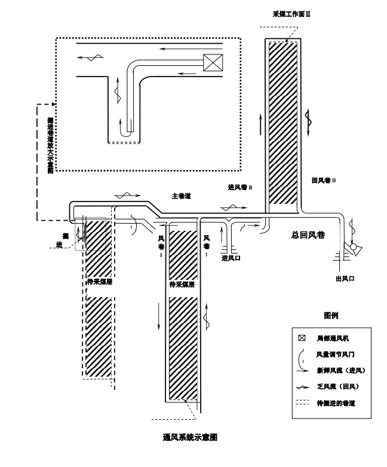

通风系统优化装置
在当下，煤矿燃烧是众多钢铁、不锈钢公司的主要能量来源，煤矿燃烧和摆放的安全问题势必受到大家的关注，因此，兴化市盛利不锈钢材料有限公司、兴化市炬龙不锈钢制品厂、兴化市华祥金属制品有限公司共同委托易次方科技团队为其设计煤矿通风系统优化方案。我们的模型可分为以下步骤： （1）根据相关数据求出每个监测点的相对、绝对煤矿涌出量，并用最大相（绝）对煤矿涌出量与判断标准进行比较，确定当天煤矿涌出量是否超标； （2）根据监测点所对应的煤矿浓度与煤尘爆炸下限浓度关系，曲线拟合出煤尘爆炸下限浓度的最小值、最大值与煤矿浓度的关系，筛选出所有监测点中煤矿浓度超出其报警浓度的数据。构造个体爆炸危险度函数和综合爆炸危险度函数，并以综合爆炸危险度来衡量该矿井的爆炸的系数； （3）曲线拟合出风速与瓦斯浓度、风速与煤尘浓度的关系，建立一个以最佳总通风量为目标函数的线性规划模型。根据各井巷风量的分流情况，并综合考虑瓦斯浓度、煤尘浓度、风速和局部通风机额定风量和余裕风量等约束条件，编程求得该煤矿所需要的最佳总通风量，以及两个采煤工作面所需要的风量和局部通风机的额定风量。
